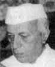
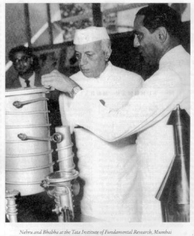

|
From Biblio, Nov-Dec, p. 7-9. 
The road to Pokhran
A second source of new material are various archives in the US as well as interviews with officials involved in setting policy towards India and I should also commend the book for its account of American policymaking towards India's nuclear program. The story Perkovich tells goes something like this. The nuclear energy program began with the historical conjunction of a first class scientist, namely Homi Bhabha, and a Prime Minister in love with "Science", namely Nehru, and their common desire to accelerate the process of India's catching up with the West by taking her directly to the frontiers of science and technology. As these appeared to involve nuclear energy in 1947, nuclear energy it had to be. (In retrospect the place to be was instead semiconductor research and the real milestone was the invention of the transistor in 1948. Bhabha, the particle theorist, could not have understood this -- yet another illustration of the silliness of governments, even when advised by the best and the brightest, picking economic/technological "winners".) While the bulk of the effort was peaceful, if impractical in confusing cause and effect in energy consumption, and directed towards the construction of reactors, the book argues that both Nehru and Bhabha, especially the latter, were not unaware of the weapons implications and that the early choices in the matter of secrecy and of the crucial role of plutonium in the planned fuel cycle likely involved an instinctive appreciation of the requirements of a weapons program. Certainly, to someone born after the Nehru/Bhabha years and accustomed to hearing of India's relentless idealism in this period, it comes as a surprise to find both gentlemen asserting periodically in the absence of a nuclear threat to India that she was capable of building weapons in a year and a half but wasn't going to do so. Oddly enough, it appears that this oft-repeated claim was false. India did not have access to the necessary plutonium till the Trombay reprocessing facility began operating in 1964. Perkovich argues that these were two sides of the same coin: Bhabha and his successors in the nuclear establishment were unable to deliver on the grand promises of cheap nuclear power and self-sufficiency, and in order to justify their existence and budgets, needed increasingly to point to a weapons program -- a pattern, he asserts, that continues to this day. The first of four turning points came with China's test of a fission device in 1964. Bhabha pushed for an explosives program and Shastri, under pressure, acceded to research into "peaceful nuclear explosions" (PNEs) -- that were intended, in the early days of nuclear power, to assist in massive engineering projects. The book sees this as the setting of a new pattern -- a "stick-slip" routine in which the nuclear establishment would push the weaponeering process further along while the political position remained stationary ("stick) followed by a "slip" in which the country's position would suddenly shift leading to a new equilibrium further along the direction of overt nuclear capability. The second turning point was the first Pokhran test in 1974 in which an explosives capability was made public with serious injury to western assistance to the DAE's activities. The third was Pakistan's acquisition of nuclear weapons in the 1980's which caused the weapons issue to take on an urgency for the first time, and the fourth was the renewal of the NPT followed by the negotiations over the CTBT which led into the tests undertaken by the Vajpayee government. Progress along this route has not been uninterrupted; the book records three instances of serious opposition: an initial attempt by Meghnad Saha to check Bhabha's untrammeled power over the DAE and over most of the funding for Indian science; Vikram Sarabhai's desire to stop the explosives program and rationalize the priorities of the government's research effort and Morarji Desai's unwillingness to even contemplate the logic of the first Pokhran test. Perkovich notes that no other nation has followed anything like as tortured and restrained a path to nuclear weapons capability or with as much open, if largely symbolic, debate. He also argues that actual security threats have played an enabling but not decisive role in the progress of the program both on grounds of chronology and of the absence of serious strategic discussions prior to any of the major steps. Instead he argues that the push for the development of weapons and delivery systems has come from two sources: (a) a general desire to possess the symbols of great-powerdom and (b) the self-interest of the strategic enclave. Restraining this but most importantly restraining deployment has been a quartet of factors: (c) a general desire on the part of the Indian elite to position that nation on a different moral plane than realists elsewhere (d) the exclusion of the military from any meaningful input into broader national security decision-making with the support of the strategic enclave (e) an unwillingness to spend what it takes to build arsenals, again with the support of the strategic enclave and (f) international pressure from the United States and its allies. The reader will note that with the exception of international pressure, all six factors are either bureaucratic imperatives (b,d,e) or civilizational (a,c) or both (d,e). To amplify: given a memory of being an alternative civilization (and not merely a state) India cannot find its way to accepting the norms of the international state [++Page 8] system with its basis in realpolitik and yet cannot abide a situation in which she does not possess the symbols of power that others, especially former colonial powers, possess. The internal civilizational logic of caste and ritual hierarchy, Perkovich suggests, is responsible for the dominance of the Brahmin civilians over the non-Brahmin military and one might suggest, by extension, for the dominance of development over deployment. The Nehruvian/bureaucratic state was designed with the generalists of the IAS at its "commanding heights" and they have happily kept the military under their thumbs (just get any army officer started on the relative pay scales to get a sense of this!) certainly in part because of (in retrospect, unjustified) fears of a coup d'etat in the early days of Indian independence. By contrast the strategic enclave is a well established part of the Nehruvian/bureaucratic state on account of its ideological connection with its raison d'etre and skilled at protecting its turf, and Perkovich argues that both they and the generalists agree that to arm the military with nuclear weapons would be to increase greatly the prestige and bargaining power of the latter relative to their own. The only surprise in all of this is that the military did not figure this out in the 1960s and did not start demanding nuclear weapons back then! (I assume this is a tribute to the capacity of the IAS to run rings around your average man in uniform. The late General Sundarji was an exception but then, I gather, he was an Iyengar himself!) Some of the central contentions of the book are captured well in two incidents. In the first, Perkovich quotes K. Subrahmanyam in 1992 on the racial identity politics he believes is a central motivation for Indian nuclear defiance, "What the world needs is for blacks in America to become 51 percent of the population. Then you will get rid of your nuclear weapons the next day, as South Africa has prepared to do." The second is an account of an Indo-Sino-Pak-US dialogue co-organised by the author in Goa m 1995 and attended by significant figures from all sides. Here is Perkovich on the dynamics of the gathering:
"Each group revealed tensions between the desire for its nation to be regarded as "equal" to the others and the gnawing recognition of the actual disparities in economic and military power ...The Pakistanis evinced a palpable feeling of their state's inferiority vis-a-vis India and a desire to be regarded as equals to Indians and India. The Indians displayed occasional haughtiness and even rudeness towards Pakistani representatives but were diffident towards the Chinese ...In a session on ballistic missile threats, the Indian participants raised no concerns over China's missile capabilities vis-a-vis India, despite the fact that several of the Indians wrote passionate articles in newspapers on the Chinese missile threat. When an American asked the Chinese participants to address India's concerns, a former high ranking Indian foreign affairs official interjected "China poses no threat to India". This foreclosed discussion." I am stating the obvious, I think, when I say that this is not a very flattering portrait of Indian nuclear decision-making -- beset by colonial traumas, intellectual inadequacy, and bureaucratic inertia. To a younger generation, increasingly disenchanted with the colonial-dirigiste prism used by the ancien regime, much of this will seem eminently plausible. One has only to read the nth piece pleading with the Government of India not to cut off its nose to spite its face whenever international trade negotiations come around to get a sense of the feelings of this group. A state capable of strangling economic development in its domain for the better part of 50 years, is surely capable of lesser idiocies. But still, one has to ask, (a) is the portrait accurate, (b) is it fair, and finally, (c) does it matter? On the accuracy issue, it is hard to argue with Perkovich's data, especially as he has so much more of it than anyone else outside the strategic enclave! Starting with the Indira years, he has interviewed many of the strategic enclave principals and indirectly gathered evidence from some more. Their words speak for themselves and do indeed tell of a decision-making process devoid of meaningful national security inputs and of a `stickslip' pattern. My chief quibble with his account is its emphasis on the deliberations of the strategic enclave and consequent failure to make more of three important markers in the broader -- though elite -- Indian discourse on matters of national security. The first of these is the 1962 conflict with China which is, to my mind, the childhood trauma without which the behaviour of the adult (documented for example in the Goa proceedings referred to above) makes little sense. The second of these is the Deng reform and resulting economic growth in China and the resulting fear on the part of the Indian elite that a superpower rivaling the United States was about to develop on India's periphery. These two markers are not that far apart and the legacy of one has surely fed into the response to the second. India and China are natural peers, in size civilizational memory, and in their fumbling attempts to come terms with a modern world created largely elsewhere. Certainly on the Indian side, comparisons are ubiquitous and one can make a reasonable case that `respect' in recent times has meant that seen as accorded to China. The third marker was Indira Gandhi's `left' turn in 1969 and the general devaluation of institutions that resulted. The import of this was simply that serious deliberation on nuclear matters became rapidly impossible outside the government and its institutions like IDSA, a lack which is starting to be remedied now. To put matters in perspective, in 1966 the Indian School of International Studies held the first all-India seminar on nuclear matters that recommended a nuclear weapons capability for India, and the debate on the NPT in 1968 took place in a Lok Sabha with strong contingent of heavyweights on the opposition benches -- one can even find in the debates the expressed, prophetic, fear that a Sino-US rapprochment was on the cards! (Neither of these are drawn from the book and I am grateful to Professor M. L. Sondhi for bringing them to my attention.) Post-1969 and especially after the 1971 election, both academia and Parliament largely ceased to make meaningful inputs into governmental decision-making, contributing further to the "inward" drift that Perkovich chronicles. Indeed, one can argue that the prior Shastri period, with its more genuinely democratic polity, resulted in a fairly rational response to China's acquisition of nuclear weapons -- the initiation of a nuclear explosives research effort by India and that a less damaging internal political development might have led to more considered moves on this front as well. Instead, one got a largely subterranean bureaucratic poetics with occasional eruptions to the surface -- which is the sort of geophysical activity that is very hard to decode from its visible symbols. A second quibble is with the frequent references to India's poverty as a factor in decision-making. First, by the 1970s it was no longer possible to argue that the Indian state was primarily interested in alleviating poverty-the anemic 3.5% growth rate was justified only by the imperatives of the bureaucratic state and the kind of paralysis between conflicting groups described for instance by Pranab Bardhan in his The Political Economy Of Development In India. Hence the unwillingness to fund a serious nuclear weapons effort on the grounds of `poverty alleviation' is best seen as part of the general unwillingness of the `domestic empire' to share its resources with anyone else, not as a particularly high minded move. (Watch what they do, not what they say.) Second, the Indian state in the 1990s is much wealthier than it was in the 1960s even if the per capita income of the average Indian is not-the purchasing power parity figures of the World Bank put its expenditure at 15% of a GDP of about $1.6 trillion which comes to about $240 billion dollars. For comparison the GDP of the US is currently about $8 trillion but a more useful comparison might be to the US in the 1950s when it began building a nuclear arsenal with a GDP comparable to the current Indian figure. Now this is, at best, food for thought, for a large correction for the average economic and technological unsophistication (which would lead to a different definition of purchasing parity) would be needed to make this more realistic. But still, a wealthier state will seek to purchase more intangible goods such as `security' and `prestige' in a higher consumption bracket -- China is seeking to put a man on the moon, and it should not come as a surprise that India would seriously revive its interest in nuclear weapons and delivery systems. While considerations of this kind would need to be included to provide a more definitive account of the context of Indian nuclear decision-making, they do not invalidate the bulk of Perkovich's account of what was directly in the minds of key decision-makers as they took decisions. As I noted earlier, they speak for themselves. So we must turn next to the question of fairness, namely are Indian decision-makers being held to a higher standard than elsewhere in their failure to provide a proper "security narrative"? To begin with, it is worth noting that nuclear policy concerns a category of weapons that are, by common consent, expected never to be used and have indeed not been used since World War II. As such there is really no empirical basis on which to discuss rationally their place in the national security policy of any country, as opposed to, say, the size of the conventional farces required to defend its borders -- where historical data on force to space ratios can be used to arrive at a reasonable figure. Unsurprisingly, the arsenals of the US and USSR in the heydays of the Cold War went through the roof and attempts to theorise about the possible employment of nuclear weapons spanned the range from Herman Kahn's hyperspecific escalation ladder to Thomas Schelling's "a little lunacy is a good thing" (something to keep in mind when the nuclear behaviour of the Pakistanis is keeping you up late at night). Indeed even today, former Secretaries of Defense James Schlesinger and Robert McNamara, neither lacking in serious analytic ability, can scarcely agree on the role of nuclear weapons in the defense of the US today. In such a setting, a "security narrative" has a large element of ambiguity -- mostly it speaks to the rhetoric of the relevant "strategic community", not [++Page 9] necessarily to the actual imperatives of nuclear defence/ deterrence. To make matters more concrete, even in the case of the US, there is considerable evidence that the dynamics of nuclear policy were seriously affected by the push from weaponeers at Los Alamos and Livermore aided by competition among the services for bigger pieces of the nuclear pie without a great deal of reference to actual threats from the Soviet Union or China.  The interesting case is, of course, again that of China. The kinds of arguments marshalled against a small Indian nuclear capability versus China, it would seem have applied mutatis mutandis against China's acquisition of, what is still, a small nuclear capability when measured against that of the US and of Russia. Until not very long back China was not really capable of hitting the mainland United States and even today it is hard to see how a Chinese leadership could, rationally, use nuclear weapons in a conflict with the US, say over Taiwan given the disproportionate retaliation that could provoke. In the early days it could readily have been argued that China's nuclear program created more risks than it was worth -- and in fact, it did nearly lead to a Soviet attack on her nuclear facilities after the Ussuri River clashes in 1969 (see William Bundy's A Tangled Web for a brief account of this event). It would seem that there are two conclusions one can draw from this kind of comparative survey: (a) that any state seeking a small nuclear capability relative to its potential adversaries is motivated primarily by prestige and is being silly -- this would mean that India (versus China), China (versus the US), the UK and France are wasting their time and money while the US, Russia, Israel, Pakistan, India (versus Pakistan) and China (versus India) have some logic on their side or( b) that even small nuclear forces with uncertain delivery means have a non-negligible deterrent value in the minds of those charged with the use of force in inter-state relations. In either case, it would seem that Indian decision-making about nuclear weapons does display a "family resemblance" to decision-making elsewhere. (In fairness to Perkovich, he allows more or less this sentiment, sans China for reasons that take up a footnote, in his concluding chapter.) If we grant (b), i.e. that nuclear weapons are "superb deterrents" (Mearsheimer) one can even conclude that the Indian process has, in its predictably chaotic fashion, arrived at something like a minimal reasonable result given its perceived security needs. In other words, maybe the process didn't matter after all! I must say that this is not as easily dismissed as those of us addicted to greater intellectual clarity would like. It isn't clear that a larger nuclear capability would have helped given the rest of Indian history over the past 50 years or that complete abstinence was ever plausible in a world where nuclear weapons are yet symbols of military strength and with neighbours with strong reasons of their own to posses them. So the quantum of nuclear deterrence that India has obtained is not obviously wrong. What is true is that a confusing process engenders confusion elsewhere and promotes a reputation for hypocrisy. As Perkovich notes, when India finally decided to seek overt nuclear status, it found itself acting against a nearly unanimous international consensus in favour of the status quo and unable to explain to an international community exactly why we sought this recognition. Initially there was an attempt to produce a security narrative (Vajpayee's letter to Clinton) but soon official noises retreated to the banal "due of one-sixth of humanity" (the proliferation-non-proliferation thesis). Optimists can see in this a struggle between a clearer definition of national self-interest that the BJP's political tradition favours and the establishment whose cooperation it needs to govern. Pessimists will note that even in the most optimistic of scenarios, several years will be lost while Indian diplomacy attempts to undo the damage wrought by the initial idiocies. There is a detectable shift in India's nuclear position post-Pokhran, most notably in the "daft" (the pun is irresistible!) nuclear doctrine but with K. Subrahmanyam, in a piece in The Times of India, October 4, 1999, defending its ambition on the grounds that we cannot possibly afford to pay for it, I think the golden age of Indian strategic clarity is not yet upon us! Perkovich himself is interested in the Indian experience for more global reasons, as the Director of the Secure World Program at the W Alton Jones Foundation he is in the business of funding attempts to reduce the danger of nuclear war. (The Foundation's work in India includes support of the Institute of Peace and Conflict Studies in New Delhi.) Appropriately, he concludes by outlining the lessons for the non-proliferation regime supported by the five nuclear powers. He couches them negatively, in the form of four "illusions in American international relations theory", namely (i) that security concerns decisively determine proliferation, (ii) that non-proliferation is the flip-side of proliferation, (iii) democracy promotes non-proliferation and (iv) that equitable disarmament is unnecessary for non-proliferation. What is new and interesting here are the last two and his assertion that they are connected. American policymakers tend to point to South Africa, North Korea, South Korea, Taiwan, Belarus, Kazhakastan, Ukraine, Argentina and Brazil as instances of successful anti-proliferation policy to buttress their prescriptions for the rest of the world. Perkovich notes that crucial decisions to abandon or halt a weapons program in most of these cases were taken by non-democratic regimes, outside the democratic setup (South Africa) or by nascent democracies repudiating their military past (the last two). By contrast democratic members or near-members of the nuclear club seem unable to do any such things presumably due their general institutional inertia (can't undo anything in a mature democracy!) and a far greater sensitivity to the perceived equity of international appearances (think France). In Washington, where both democracy and non-proliferation are success words, Perkovich's diagnosis of cognitive dissonance is likely to generate little sympathy for a while to come. In New Delhi which generally tries not to make too much of its commonalties with sister democracies in its rhetoric but doesn't like being clubbed with (Pakistan) or below (China) its undemocratic neighbours, this link could conceivably be turned into a normative argument for its possession of nuclear weapons -- indeed, such an argument has recently been made at some length by M. L. Sondhi and Prakash Nanda in their recent book Vajpayee's Foreign Policy. As the book has many interesting titbits, I can't resist mentioning a few. In the aftermath of the first Chinese nuclear test in 1964, two separate agencies in the US considered providing nuclear assistance to India: the Atomic Energy Commission suggested a "Plowshare (peaceful, i.e. for engineering purposes, nuclear explosion) device while the Department of Defense suggested making arrangements to provide a whole ring of states bordering China, including India, with nuclear weapons in the event of Chinese aggression. These were ruled out and the US ended up going the NPT route instead. Perkovich also adduces evidence that Bhabha approached the US for a nuclear blueprint in 1964-65, presumably without Shastri's authorisation, in an attempt to fashion a quick response to China's test. In his 1974 visit following the first Pokhran test then Secretary of State Henry Kissinger offered a dialogue on nuclear issues and offered to send US nuclear experts to assist their Indian counterparts in safely managing a nuclear explosive program that he assumed would follow in due course, inclusive of further tests. The canonical official number for the yield of Pokhran I is 13 kilotons, as quoted in a September 1998 article by Sikka, Roy and Nair in Current Science. Perkovich quotes Homi Sethna as saying that the yield was "much lower" and P K. Iyengar as saying that it was between 8 and 10 kilotons. These admissions have the effect of casting serious doubt on the official account of the yield of the tests -- as its defense by Sikka et al was based on using the 13 kiloton number for calibration. The upshot of all of this is, unfortunately, to call into serious question the claimed successful test of a hydrogen bomb. Perkovich confirms that one of the small devices tested was made from non-weapons grade plutonium. If this was a successful test of a device made from something approaching reactor grade plutonium, the potential size of a fission arsenal for India is far larger than previously estimated. All in all, this book is an impressive achievement, even more so if one keeps in mind that Perkovich is not an India expert by trade. Although this leads to the occasional fact that is not in place -- on occasion a somewhat inconsistent rendering of Indian names, a flattering reference to Mrs. Soma Gandhi's appearance that is worthy of the New York Times, perhaps a failure to see the South Indian Brahmins as an internal Diaspora, and an account of Indian poetical developments that insiders will want to amend in some places -- the broad account rings true. One can only hope that it will challenge its international audience to a more nuanced understanding of the road India took to Pokhran and its Indian audience to a determination to arrive at a more deliberate roadmap for the country's nuclear future. I highly recommend it to all interested in the potentially perilous journey ahead. Back to the top. |